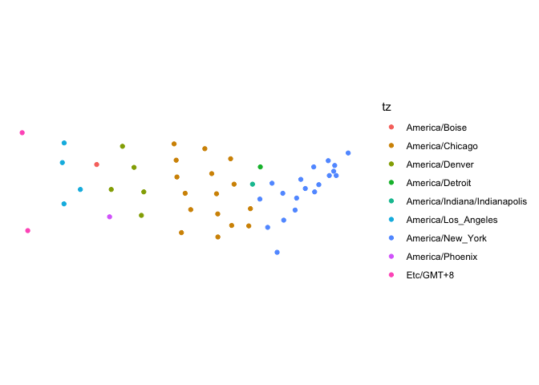
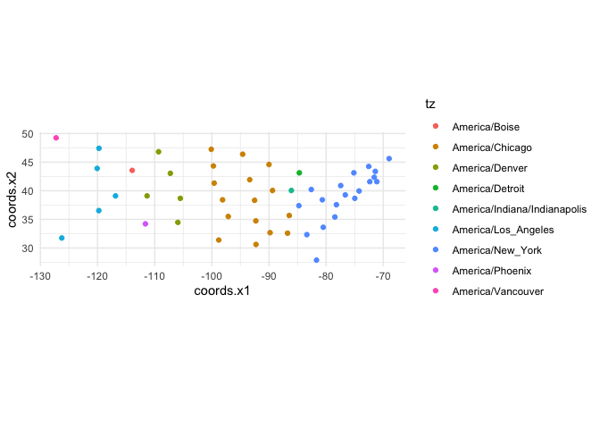

Lookup the time zone of coordinates
Input latitude and longitude values or an sf/sfc POINT object and get back the time zone in which they exist. Two methods are implemented. One is very fast and uses Rcpp in conjunction with source data from (https://github.com/darkskyapp/tz-lookup-oss/). However, speed comes at the cost of accuracy - near time zone borders away from populated centres there is a chance that it will return the incorrect time zone.
The other method is slower but more accurate - it uses the sf package to intersect points with a detailed map of time zones from here.
time zone utility functions
lutz also contains several utility functions for helping to understand and visualize time zones, such as listing of world time zones,including information about daylight savings times and their offsets from UTC. You can also plot a time zone to visualize the UTC offset over a year and when daylight savings times are in effect.
Installation
You can install lutz from CRAN with:
install.packages("lutz")Or you can install the development version from github with:
# install.packages("devtools")
devtools::install_github("ateucher/lutz")Examples
There are two functions in this package for looking up the time zones of coordinates: tz_lookup() which works with both sf/sfc and SpatialPoints objects, and tz_lookup_coords for looking up lat/long pairs. Use the method argument to choose the "fast" or "accurate" method.
With coordinates. They must be lat/long in decimal degrees:
library(lutz)
tz_lookup_coords(49.5, -123.5, method = "fast")
#> [1] "America/Vancouver"
tz_lookup_coords(49.5, -123.5, method = "accurate")
#> [1] "America/Vancouver"
tz_lookup_coords(lat = c(48.9, 38.5, 63.1, -25), lon = c(-123.5, -110.2, -95.0, 130))
#> [1] "America/Vancouver" "America/Denver" "America/Rankin_Inlet"
#> [4] "Australia/Darwin"With sf objects:
library(sf)
library(ggplot2) # this requires the devlopment version of ggplot2
# Create an sf object out of the included state.center dataset:
pts <- lapply(seq_along(state.center$x), function(i) {
st_point(c(state.center$x[i], state.center$y[i]))
})
state_centers_sf <- st_sf(st_sfc(pts))
# Use tz_lookup_sf to find the time zones
state_centers_sf$tz <- tz_lookup(state_centers_sf)
state_centers_sf$tz <- tz_lookup(state_centers_sf, method = "accurate")
ggplot() +
geom_sf(data = state_centers_sf, aes(colour = tz)) +
theme_minimal() +
coord_sf(datum = NA)
With SpatialPoints objects:
library(sp)
state_centers_sp <- as(state_centers_sf, "Spatial")
state_centers_sp$tz <- tz_lookup(state_centers_sp)
ggplot(cbind(as.data.frame(coordinates(state_centers_sp)), tz = state_centers_sp$tz),
aes(x = coords.x1, y = coords.x2, colour = tz)) +
geom_point() +
coord_fixed() +
theme_minimal()
Note that there are some regions in the world where a single point can land in two different overlapping time zones. The "accurate" method includes these, however the method used in the "fast" does not include overlapping time zones (at least for now).
We can compare the accuracy of both methods to the high-resolution time zone map provided by https://github.com/evansiroky/timezone-boundary-builder. This is the map that is used by lutz for the "accurate" method, but in lutz it is simplified by about 80% to be small enough to fit in the package.
## Get the full time zone geojson from https://github.com/evansiroky/timezone-boundary-builder
download.file("https://github.com/evansiroky/timezone-boundary-builder/releases/download/2019a/timezones-with-oceans.geojson.zip",
destfile = "tz.zip")
unzip("tz.zip", exdir = "data-raw/dist/")
library(lutz)
library(sf)
library(purrr)
library(dplyr)
tz_full <- read_sf("data-raw/dist/combined-with-oceans.json")
# Create a data frame of 500000 lat/long pairs:
set.seed(1)
n <- 500000
ll <- data.frame(id = seq(n), lat = runif(n, -90, 90), lon = runif(n, -180, 180))
ll_sf <- st_as_sf(ll, coords = c("lon", "lat"), crs = 4326)
# Overlay those points with the full high-resolution time zone map:
ref_ll_tz <- sf::st_join(ll_sf, tz_full)
# Combine those that had overlapping time zones
ref_ll_tz <- ref_ll_tz %>%
st_set_geometry(NULL) %>%
group_by(id) %>%
summarize(tzid = paste(tzid, collapse = "; "))
# run tz_lookup with both `"fast"` and `"accurate"` methods and compare with
# the time zones looked up with the high-resolution map:
tests <- map_df(c("fast", "accurate"), ~ {
time <- system.time(test_ll_tz <- tz_lookup(ll_sf, method = .x, warn = FALSE))
comp <- ref_ll_tz$tzid == test_ll_tz
matches <- sum(comp, na.rm = TRUE)
mismatches <- sum(!comp, na.rm = TRUE)
list(
method = .x,
time = time["elapsed"],
matches = matches,
mismatches = mismatches,
accuracy = matches / (matches + mismatches),
ref_nas = sum(is.na(ref_ll_tz$tzid)),
fun_nas = sum(is.na(test_ll_tz))
)
})
knitr::kable(tests)time zone utility functions

tz_offset()
# A Date object
tz_offset(Sys.Date(), "Africa/Algiers")
#> tz_name date_time zone is_dst utc_offset_h
#> 1 Africa/Algiers 2023-10-17 CET FALSE 1
# A Date-like character string
tz_offset("2017-03-01", tz = "Singapore")
#> tz_name date_time zone is_dst utc_offset_h
#> 1 Singapore 2017-03-01 +08 FALSE 8
# A POSIXct date-time object
tz_offset(Sys.time())
#> Warning: You supplied an object of class POSIXct that does not have a time zone
#> attribute, and did not specify one inthe 'tz' argument. Defaulting to current
#> (America/Vancouver).
#> tz_name date_time zone is_dst utc_offset_h
#> 1 America/Vancouver 2023-10-17 12:11:11 PDT TRUE -7
tz_list()
| tz_name | zone | is_dst | utc_offset_h | |
|---|---|---|---|---|
| 1 | Africa/Abidjan | GMT | FALSE | 0 |
| 2 | Africa/Accra | GMT | FALSE | 0 |
| 3 | Africa/Addis_Ababa | EAT | FALSE | 3 |
| 4 | Africa/Algiers | CET | FALSE | 1 |
| 5 | Africa/Asmara | EAT | FALSE | 3 |
| 6 | Africa/Asmera | EAT | FALSE | 3 |
| 7 | Africa/Bamako | GMT | FALSE | 0 |
| 8 | Africa/Bangui | WAT | FALSE | 1 |
| 9 | Africa/Banjul | GMT | FALSE | 0 |
| 10 | Africa/Bissau | GMT | FALSE | 0 |
| 11 | Africa/Blantyre | CAT | FALSE | 2 |
| 12 | Africa/Brazzaville | WAT | FALSE | 1 |
| 13 | Africa/Bujumbura | CAT | FALSE | 2 |
| 14 | Africa/Cairo | EET | FALSE | 2 |
| 16 | Africa/Cairo | EEST | TRUE | 3 |
| 17 | Africa/Casablanca | +01 | TRUE | 1 |
| 18 | Africa/Casablanca | +00 | FALSE | 0 |
| 19 | Africa/Ceuta | CET | FALSE | 1 |
| 20 | Africa/Ceuta | CEST | TRUE | 2 |
| 21 | Africa/Conakry | GMT | FALSE | 0 |